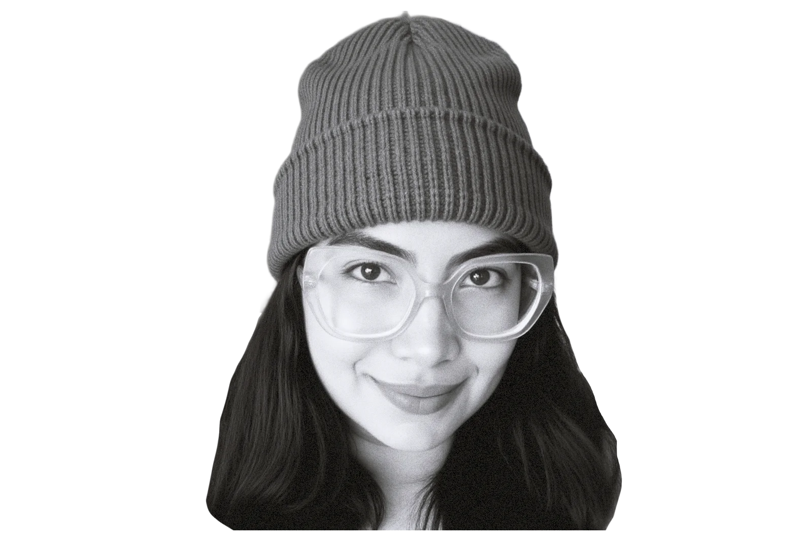
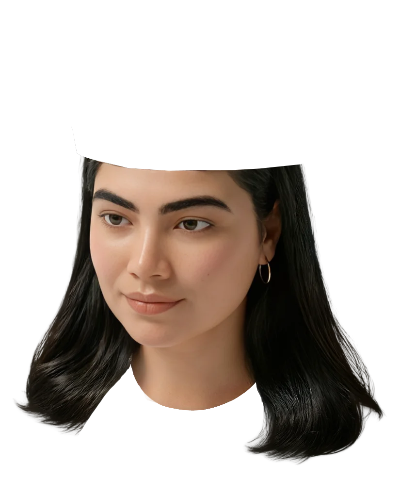
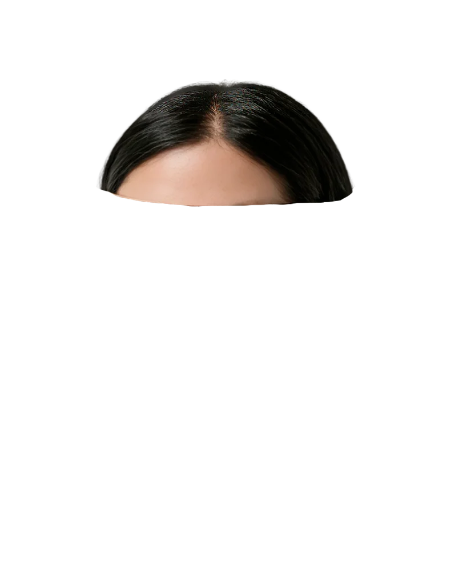

✺ Showreel Dic 2025

Hola, soy YOYI.
Soy artista digital y diseñadora. Originaria de Caracas y radicada en Buenos Aires, he pasado los últimos seis años explorando la convergencia entre el arte y el diseño.
Mi camino comenzó con bocetos analógicos, evolucionando hacia una práctica donde ahora uso movimiento, sonido y código interactivo para darle vida a los conceptos.
Busco colaborar en proyectos que celebren el color, la textura y la expresión artística. Mi enfoque es la intersección del arte, la música, la moda y los medios audiovisuales. (por favor revisa mi versión de computadora — me tomó como 1 mes sin dormir, programando hasta el amanecer, ¡vale la pena!)
Hola, soy Johana, conocida como YOYI.
Soy artista digital y diseñadora multimedial con seis años de experiencia. Mi viaje comenzó con bocetos analógicos e ilustraciones a mano, evolucionando hacia una carrera donde ahora uso movimiento, sonido y código interactivo para dar vida a las ideas.
Originaria de Caracas, he hecho de Buenos Aires mi hogar durante los últimos ocho años. Actualmente estoy terminando mi carrera de Diseño Multimedial en la Escuela Da Vinci, donde he combinado mis raíces autodidactas con formación técnica.
Hoy, me enfoco en proyectos que priorizan el color, la textura y la expresión interactiva. Mi objetivo es seguir creando en la encrucijada del arte, la música, la moda y los medios audiovisuales, poniendo mi corazón en cada proyecto.
Artista Digital & Diseñadora Multimedial
Soy artista digital y diseñadora multimedial, nacida en Caracas, Venezuela, y viviendo en Buenos Aires. Llevo más de 6 años trabajando en proyectos creativos mientras continúo mi formación de Diseño Multimedial en la Escuela Da Vinci .
Durante este tiempo he trabajado en ilustración, identidad visual, contenido para redes sociales, plataformas de streaming, lanzamientos musicales, animación y video. Me gusta moverme entre distintas disciplinas porque cada proyecto me permite aprender algo nuevo y encontrar formas diferentes de comunicar una idea.
"AUNQUE MI TRABAJO ESTÉ LLENO DE COLOR, JUEGO Y EXPERIMENTACIÓN, ME TOMO MUY EN SERIO TODO LO QUE HAGO."
Soy una persona muy curiosa. Me interesan el arte, la música, el diseño, la moda, la ilustración, los libros y las historias en todas sus formas. Disfruto investigar, observar y conectar referencias.
Me gusta entender el porqué detrás de cada decisión y enfrentar desafíos nuevos. Si no sé algo hoy, probablemente mañana ya esté investigándolo.
Disfruto colaborar con personas que tienen proyectos ambiciosos, perspectivas diferentes y ganas de construir algo auténtico .
PD: Y si llegaste hasta acá, ¡gracias por darte una vuelta por mi web y tomarte el tiempo de conocer un poco de lo que hago, pues significa más de lo que imaginas!


Puedes explorar todos mis proyectos en el celular, pero algunas animaciones y detalles interactivos se aprecian mejor en una computadora.